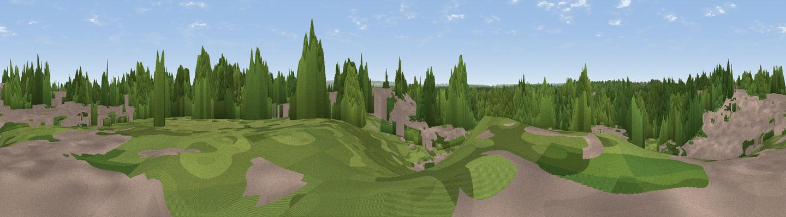

Rowhill
#42666 in England · top 59% of its area beats it · near OttershawWhere it is
The exact computed spot (TQ 03684 63498). Click the marker for map links.
The view, rendered

A 360° render of this exact spot computed from the terrain model, tree cover and land cover — summer colours, afternoon light, calibrated against photographs of famous viewpoints. Real trees, hedges and buildings will differ in detail.
The panorama
Grey silhouette: terrain skyline in each direction (720 bearings, Earth curvature and refraction included). Dashed green: skyline with trees (+15 m) and buildings (+8 m) as obstacles. Blue strip: how far the ground is visible on each bearing.
Where the view opens
Wedge length = distance to the farthest visible ground on that bearing (vegetation-aware). Rings at 10, 25 and 50 km.
What fills the view
55% woodland · 25% grassland · 18% built-up · 2% cropland
Angular shares of the visible panorama (visual magnitude), not map area. Landscape diversity 0.46 (0–1 Shannon).
Key numbers
More beautiful places nearby
The staircase of upgrades: each row has a higher view potential than everything closer. Driving times are estimates from straight-line distance, calibrated against real road routing — check an actual route before setting out.
| Place | Direction | Drive | Score |
|---|---|---|---|
| Fox Hills | WNW · 3 km | ~7 min | 42.9 |
| St Ann's Hill | NNW · 4 km | ~10 min | 51.8 |
| Viewpoint near Bishopsgate | NNW · 10 km | ~20 min | 53.6 |
| Viewpoint near Chilworth | S · 14 km | ~26 min | 57.5 |
| St Martha's Hill | S · 15 km | ~27 min | 59.5 |
| Viewpoint near Guildford | SSW · 16 km | ~28 min | 65.4 |
| Viewpoint near Compton | SSW · 17 km | ~29 min | 66.7 |
| Viewpoint near Box Hill Village | SE · 20 km | ~34 min | 68.1 |
51.36109, -0.51218 · source: osm peak · position refined by local search. Computed location — check access rights before visiting.